Gene co-expression is distance dependent in breast cancer
Features in the co-expression patterns of breast cancer molecular subtypes:
- The strength of gene-pair co-expression depends on physical distance
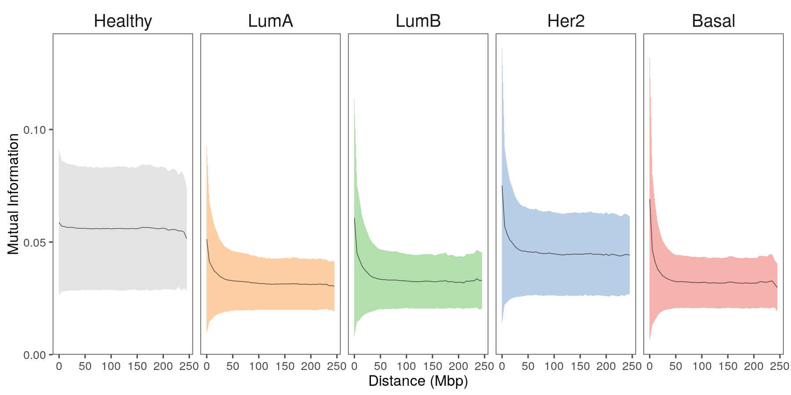
García-Cortes D. et al. Gene co-expression is distance dependent in breast cancer. Front. Oncol. 10:1232 (2020). doi:10.3389/fonc.2020.01232
Gene co-expression is distance dependent in breast cancer
Features in the co-expression patterns of breast cancer molecular subtypes:
- There is a intra-/inter- chromosomal interactions proportion imbalance in the co-expression networks
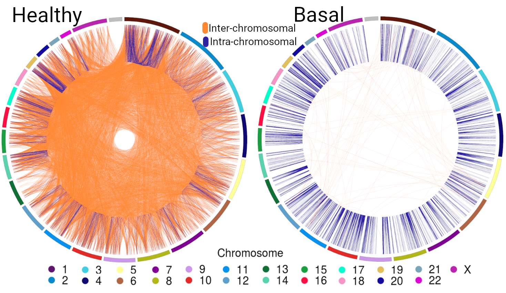
García-Cortes D. et al. Gene co-expression is distance dependent in breast cancer. Front. Oncol. 10:1232 (2020). doi:10.3389/fonc.2020.01232
Gene co-expression is distance dependent in breast cancer
Features in the co-expression patterns of breast cancer molecular subtypes:
- There is a intra-/inter- chromosomal interactions proportion imbalance in the co-expression networks
- The strength of gene-pair co-expression depends on physical distance
- There is an emergence of high density co-expression hotspots
- Strongest interactions as well as hotspots are preferably intra-cytoband in breast cancer
García-Cortes D. et al. Gene co-expression is distance dependent in breast cancer. Front. Oncol. 10:1232 (2020). doi:10.3389/fonc.2020.01232
Are there functional implications in these breast cancer co-expression features?
The Luminal A breast cancer co-expression network
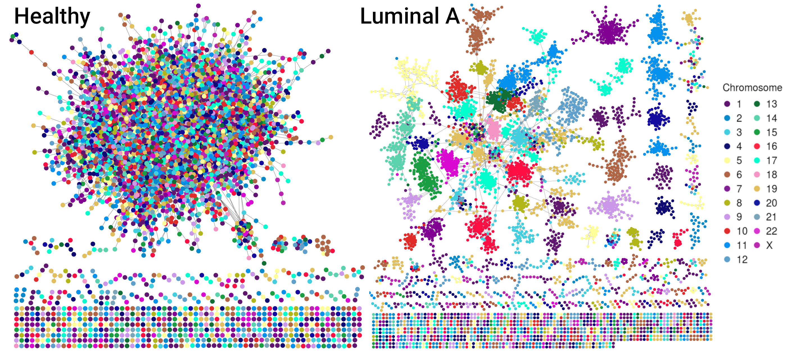
Most significat interactions: p<1e-8
20127 links - 6008 (LumA), 6348 (Healthy) nodes
Network communities
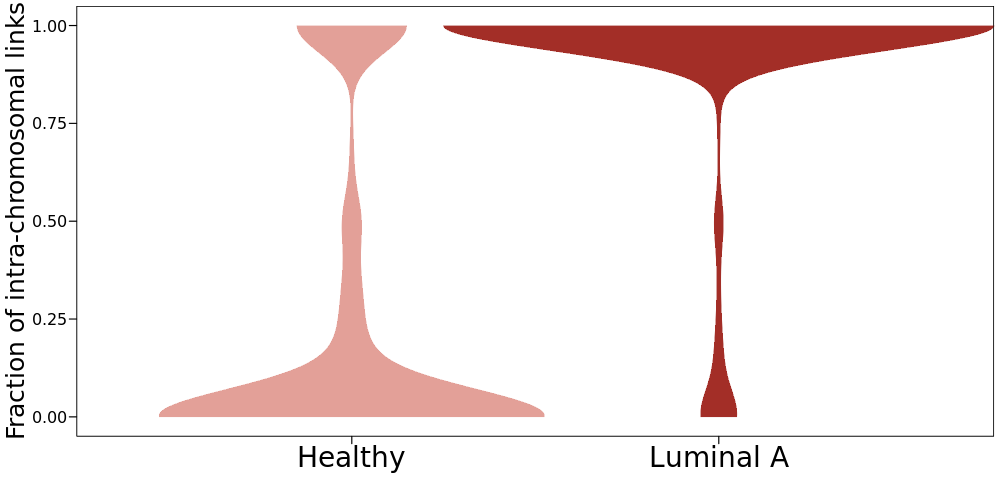
Loss of intra-chromosomal co-expression 👍
Are Luminal A network communities associated with biological functions?
|
Inter |
Intra |
| Number of communities |
87 |
612 |
| Enriched communities |
20 |
9 |
| Enriched terms |
792 |
136 |
Gene Ontology - Biological Processes Adjusted p-value < 0.005
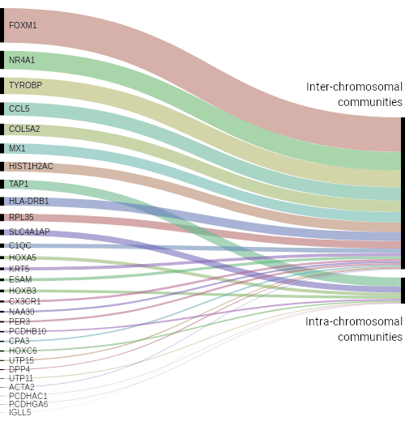
Are Luminal A enriched communities differentially expressed?
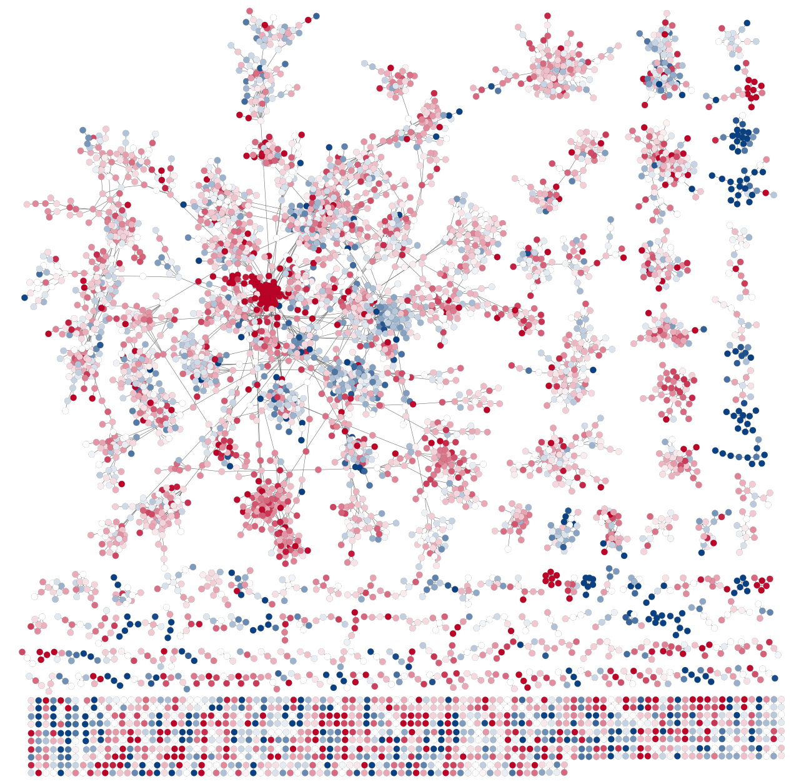
Are Luminal A enriched communities differentially expressed?
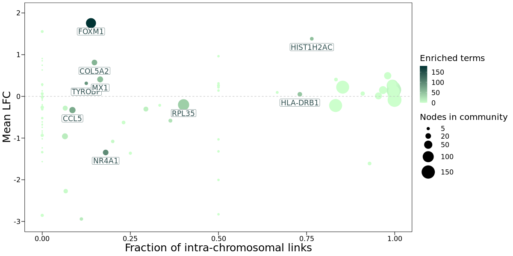
Are Luminal A enriched communities differentially expressed?
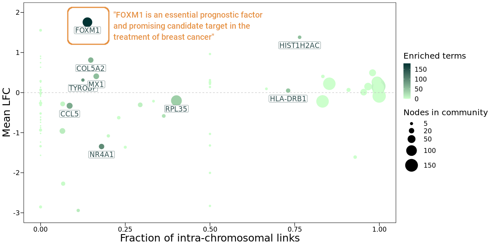
Lu XF et al. FoxM1 is a promising candidate target in the treatment of breast cancer. Oncotarget. 2017;9(1):842-852. doi:10.18632/oncotarget.23182
Carr JR et al. FoxM1 regulates mammary luminal cell fate.Cell Rep. 2012;1(6):715-729. doi:10.1016/j.celrep.2012.05.005
Is gene differential expression influenced by gene copy number variation in Luminal A enriched communities?
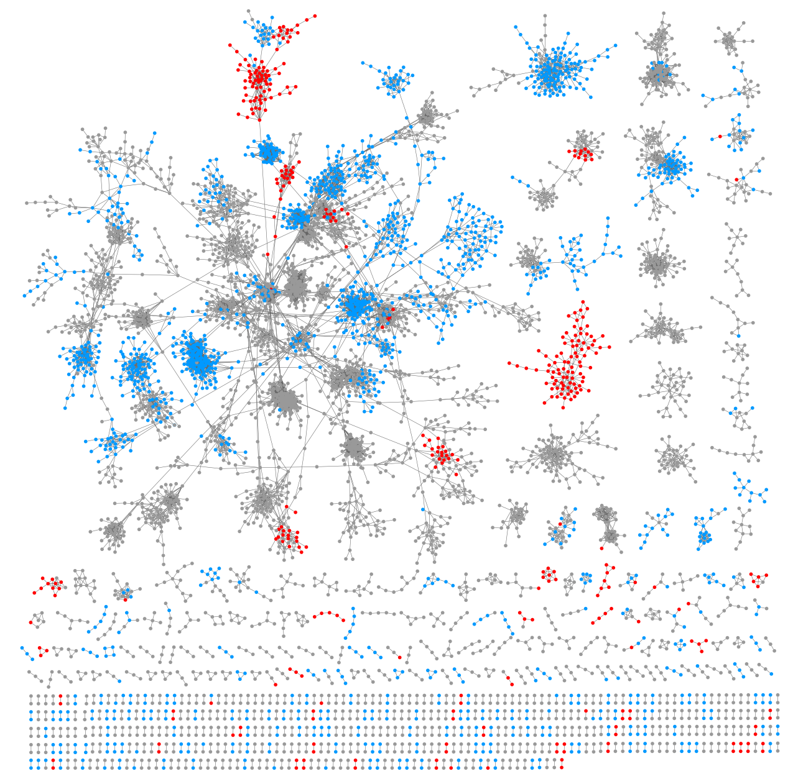
Is gene differential expression influenced by gene copy number variation in Luminal A enriched communities?
HIST1H2AC community
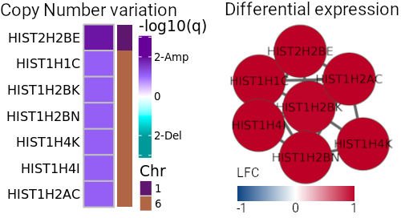
Chromatin silencing; epigenetic regulation of gene expression; DNA packaging.
Mermel, CH, et al. GISTIC2.0 facilitates sensitive and confident localization of the targets of focal somatic copy-number alteration in human cancers. Genome Biol. 2011;12(R41). doi:10.1186/gb-2011-12-4-r41
Is gene differential expression influenced by gene copy number variation in Luminal A enriched communities?
RPL35 community
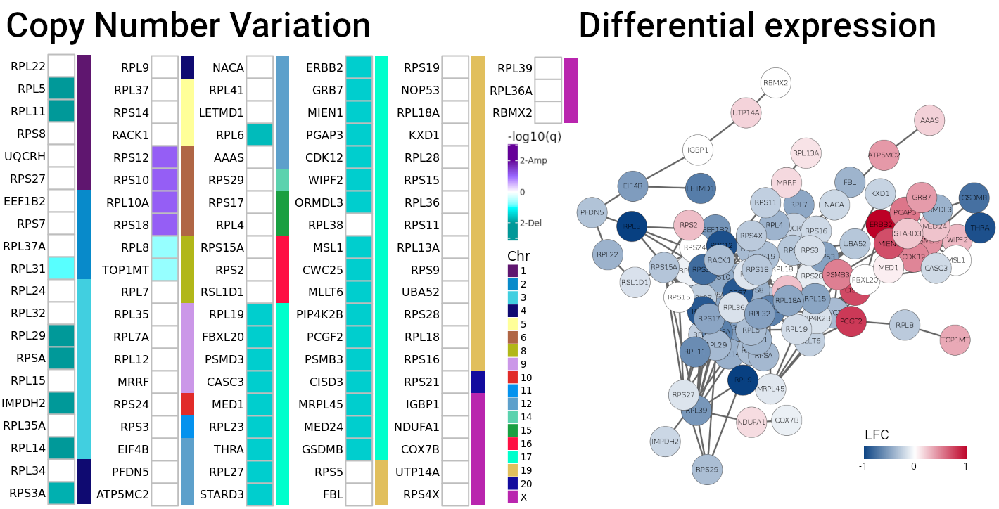
Protein localization to endoplasmic reticulum; ribosome assembly;
regulation of translation.
Mermel, CH, et al. GISTIC2.0 facilitates sensitive and confident localization of the targets of focal somatic copy-number alteration in human cancers. Genome Biol. 2011;12(R41). doi:10.1186/gb-2011-12-4-r41
Is gene differential expression influenced by gene copy number variation in Luminal A enriched communities?
FOXM1 community
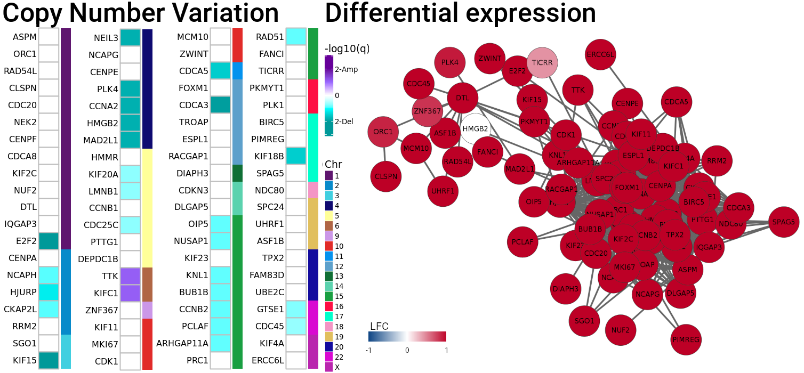
Cell cycle checkpoint; DNA replication.
Mermel, CH, et al. GISTIC2.0 facilitates sensitive and confident localization of the targets of focal somatic copy-number alteration in human cancers. Genome Biol. 2011;12(R41). doi:10.1186/gb-2011-12-4-r41
Is gene co-expression influenced by CNVs in the entire set of intra-chromosomal interactions?
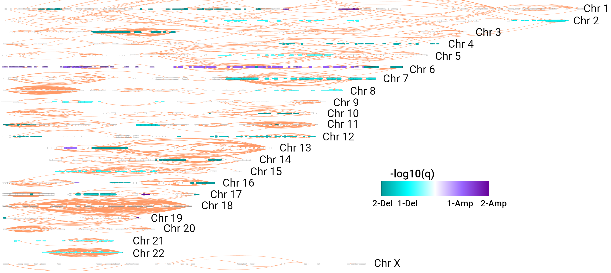
Provisional result: Deletions are more frequently associated with high density co-expression hotspots than amplifications.
Conclusions
- Topology of network communities confirms the loss of inter-chromosomal co-expression in breast cancer.
- Inter-chromosomal communities are highly associated with cancer related biological processes while intra-chromosomal communities are not usually enriched.
- Other -omics integration is required to understand the loss of long-range co-expression in breast cancer.
- Copy number alterations explain a fraction of the biological processes disruption in Luminal A breast cancer.
The loss of inter-chromosomal co-expression is a phenomenon influenced by different factors physically altering transcriptional regulation in cancer.
Thank you
Diana García-Cortés dgarcia@inmegen.edu.mx @ddiannae